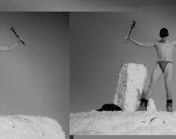

When I look back at 1997 in future years I am sure that the one thing that will stick in my mind will be the weather, To sum it up in one word - RAIN. October saw us hiding in caves and under boulders at Burbage and Stanage for the first novice meet - no-one wishing to be the first to succumb to the weather. Drizzle accompanied meets to North Wales, Pembrokeshire, Swanage, and Portland: snow was found at Crookrise, but not in Scotland, etc.etc..
Having said this, the club remains very healthy, with possibly over 200 members (no-one has counted), and in the bad weather the CUMC spirit has prevailed, ensuring that all enjoy their precious time outside the Fens. It is fantastic to see those novices I forced into dank, damp, dark, smelly caves on that first novice meet down at the pub on Mondays, and out enjoying climbing with the CUMC at the weekends.
Finally, I couldn't let this editorial pass without mentioning the WEB. Yes, this year (for those of you that somehow avoided me telling you) the CUMC published its own homepage on the internet, and replaced paper newsletters with email and the homepage, thus opening up communications with other universities. Who knows, in a few years time we may see inter-university meets as a regular occurance. Until then I am going to use technology to my advantage to make sure that I can climb with the CUMC next year, after I have graduated.

The editor in fine style on the summit of Ben Nevis
Photo: Matthew Brown